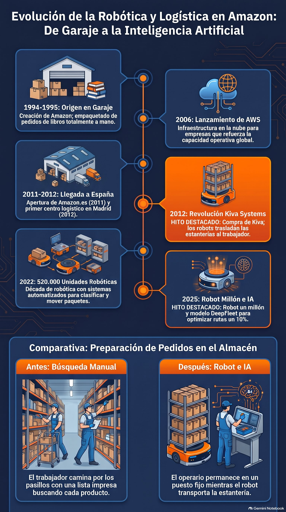
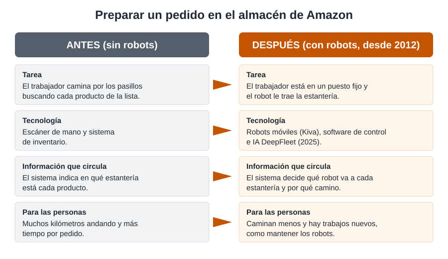

Evolución tecnológica
Los hitos más importantes y cómo ha cambiado la preparación de un pedido en el almacén.
Hitos
| Fecha | Qué cambió | Qué necesidad atendía | Fuente |
|---|---|---|---|
| 1994–1995 | Nace Amazon como librería online. Amazon.com abre en julio de 1995 desde la casa de Jeff Bezos en Bellevue. En su primer mes ya envía libros a los 50 estados de EE. UU. y a 45 países. | Vender libros a todo el país sin tiendas físicas. | Amazon: el garaje de Jeff Bezos |
| 2006 | En primavera lanza Amazon Web Services (AWS), servicios en la nube. | Ofrecer a cualquier empresa la misma infraestructura tecnológica que usan las más grandes. | AWS: nuestros orígenes |
| 2011–2012 | Abre Amazon.es y su primer centro logístico en España (San Fernando de Henares). | Entregar más rápido a los clientes españoles. | Nota de prensa Amazon España (2012) |
| 2012 | Proceso: compra Kiva Systems. Los robots llevan las estanterías hasta el trabajador. | Que los empleados no tengan que recorrer el almacén buscando productos. | Diez años de robótica en Amazon |
| 2022 | Diez años de robótica: más de 520.000 unidades robóticas y nuevos robots que ayudan a clasificar paquetes. | Preparar más pedidos y reducir tareas pesadas o repetitivas. | Diez años de robótica en Amazon |
| 2025 | Proceso: llega al robot número un millón y lanza DeepFleet, una IA que coordina los movimientos de los robots. | Evitar atascos entre robots. Según Amazon, mejora un 10 % el tiempo de desplazamiento. | Amazon: un millón de robots |
Las filas marcadas explican cómo cambió el proceso de preparar un pedido.


Imágenes


Imágenes de Amazon: el garaje de Jeff Bezos, diez años de robótica y un millón de robots.
Preparar un pedido: antes y después

Antes de los robots
- Tarea: el trabajador recibe una lista y camina por los pasillos buscando cada producto.
- Tecnología: escáner de mano y sistema de inventario.
- Información: el sistema dice en qué estantería está cada producto.
- Para las personas: muchos kilómetros andando al día y más tiempo por pedido.

Con robots
- Tarea: el trabajador está en un puesto fijo y el robot le trae la estantería.
- Tecnología: robots móviles, software de control e IA (DeepFleet).
- Información: el sistema decide qué robot va a cada estantería y por qué camino.
- Para las personas: caminan menos y aparecen trabajos nuevos, como el mantenimiento de robots.

Vídeo
“How Your Amazon Package is Delivered: From Click to Delivery”, del canal oficial Amazon News (2023, 3 min 21 s). Lo he elegido porque enseña el recorrido de un pedido desde que el cliente hace clic hasta que lo recibe, pasando por el centro logístico, que es el proceso que estudio en este proyecto.